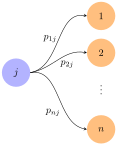

Section 3.5 Extra Topic: Application to Markov Chains
Many natural phenomena progress through various stages and can be in a variety of states at each stage. For example, the weather in a given city progresses day by day and, on any given day, may be sunny or rainy. Here the states are ``sun’’ and ``rain,’’ and the weather progresses from one state to another in daily stages. Another example might be a football team: The stages of its evolution are the games it plays, and the possible states are ``win,’’ ``draw,’’ and ``loss.’’
The general setup is as follows: A ``system’’ evolves through a series of ``stages,’’ and at any stage it can be in any one of a finite number of ``states.’’ At any given stage, the state to which it will go at the next stage depends on the past and present history of the system---that is, on the sequence of states it has occupied to date.
Definition 3.5.1.
A Markov chain is such an evolving system wherein the state to which it will go next depends only on its present state and does not depend on the earlier history of the system.
Even in the case of a Markov chain, the state the system will occupy at any stage is determined only in terms of probabilities. In other words, chance plays a role. For example, if a football team wins a particular game, we do not know whether it will win, draw, or lose the next game. On the other hand, we may know that the team tends to persist in winning streaks; for example, if it wins one game it may win the next game \(\frac{1}{2}\) of the time, lose \(\frac{4}{10}\) of the time, and draw \(\frac{1}{10}\) of the time. These fractions are called the probabilities of these various possibilities.
Similarly, if the team loses, it may lose the next game with probability \(\frac{1}{2}\) (that is, half the time), win with probability \(\frac{1}{4}\text{,}\) and draw with probability \(\frac{1}{4}\text{.}\) The probabilities of the various outcomes after a drawn game will also be known.
We shall treat probabilities informally here: The probability that a given event will occur is the long-run proportion of the time that the event does indeed occur. Hence, all probabilities are numbers between \(0\) and \(1\text{.}\) A probability of \(0\) means the event is impossible and never occurs; events with probability \(1\) are certain to occur.
If a Markov chain is in a particular state, the probabilities that it goes to the various states at the next stage of its evolution are called the transition probabilities for the chain, and they are assumed to be known quantities. To motivate the general conditions that follow, consider the following simple example. Here the system is a man, the stages are his successive lunches, and the states are the two restaurants he chooses.
Example 3.5.2.
A man always eats lunch at one of two restaurants, \(A\) and \(B\text{.}\) He never eats at \(A\) twice in a row. However, if he eats at \(B\text{,}\) he is three times as likely to eat at \(B\) next time as at \(A\text{.}\) Initially, he is equally likely to eat at either restaurant.
What is the probability that he eats at \(A\) on the third day after the initial one?
What proportion of his lunches does he eat at \(A\text{?}\)
Answer.
The table of transition probabilities follows. The \(A\) column indicates that if he eats at \(A\) on one day, he never eats there again on the next day and so is certain to go to \(B\text{.}\)
\begin{equation*}
\begin{array}{cc|c}
\amp \amp \textbf{Present Lunch} \\
\amp \amp \begin{array}{cc} A \amp B \end{array} \\
\hline
\textbf{Next Lunch} \amp \begin{array}{c} A\\ B\end{array} \amp \begin{array}{cc} 0 \amp 0.25\\1 \amp 0.75 \end{array}
\end{array}
\end{equation*}
The \(B\) column shows that, if he eats at \(B\) on one day, he will eat there on the next day \(\frac{3}{4}\) of the time and switches to \(A\) only \(\frac{1}{4}\) of the time.
The restaurant he visits on a given day is not determined. The most that we can expect is to know the probability that he will visit \(A\) or \(B\) on that day. Let \(_{m} = [
s_{1}^{(m)} \\
s_{2}^{(m)}
]\) denote the state vector for day \(m\text{.}\) Here \(s_{1}^{(m)}\) denotes the probability that he eats at \(A\) on day \(m\text{,}\) and \(s_{2}^{(m)}\) is the probability that he eats at \(B\) on day \(m\text{.}\) It is convenient to let \(_{0}\) correspond to the initial day. Because he is equally likely to eat at \(A\) or \(B\) on that initial day, \(s_{1}^{(0)} = 0.5\) and \(s_{2}^{(0)} = 0.5\text{,}\) so \(_{0} = [0.5,0.5].\) Now let
\begin{equation*}
P = \begin{bmatrix}
0 \amp 0.25 \\
1 \amp 0.75
\end{bmatrix}
\end{equation*}
denote the transition matrix. We claim that the relationship
\begin{equation*}
_{m+1} = P_m
\end{equation*}
holds for all integers \(m \geq 0\text{.}\) This will be derived later; for now, we use it as follows to successively compute \(_{1}, _{2}, _{3}, \dots\text{:}\)
\begin{align*}
_{1} \amp = P_0 = \begin{bmatrix}
0 \amp 0.25 \\
1 \amp 0.75
\end{bmatrix}
\begin{bmatrix}
0.5 \\
0.5
\end{bmatrix} =
\begin{bmatrix}
0.125 \\
0.875
\end{bmatrix} \\
_{2} \amp = P_1 = \begin{bmatrix}
0 \amp 0.25 \\
1 \amp 0.75
\end{bmatrix}
\begin{bmatrix}
0.125 \\
0.875
\end{bmatrix} =
\begin{bmatrix}
0.21875 \\
0.78125
\end{bmatrix} \\
_{3} \amp = P_2 = \begin{bmatrix}
0 \amp 0.25 \\
1 \amp 0.75
\end{bmatrix}
\begin{bmatrix}
0.21875 \\
0.78125
\end{bmatrix} =
\begin{bmatrix}
0.1953125 \\
0.8046875
\end{bmatrix}.
\end{align*}
Hence, the probability that his third lunch (after the initial one) is at \(A\) is approximately \(0.195\text{,}\) whereas the probability that it is at \(B\) is \(0.805\text{.}\) If we carry these calculations on, the next state vectors are (to five figures):
\begin{align*}
_4 \amp = \begin{bmatrix}
0.20117 \\
0.79883
\end{bmatrix}
\quad _5 = \begin{bmatrix}
0.19971 \\
0.80029
\end{bmatrix} \\
_6 \amp = \begin{bmatrix}
0.20007 \\
0.79993
\end{bmatrix} \quad _7 = \begin{bmatrix}
0.19998 \\
0.80002
\end{bmatrix}.
\end{align*}
Moreover, as \(m\) increases the entries of s_{m} get closer and closer to the corresponding entries of \([0.2, 0.8] \text{.}\) Hence, in the long run, he eats \(20\%\) of his lunches at \(A\) and \(80\%\) at \(B\text{.}\)
Example 3.5.2 incorporates most of the essential features of all Markov chains. The general model is as follows: The system evolves through various stages and at each stage can be in exactly one of
\(n\) distinct states. It progresses through a sequence of states as time goes on. If a Markov chain is in state
\(j\) at a particular stage of its development, the probability
\(p_{ij}\) that it goes to state
\(i\) at the next stage is called the
transition probability. The
\(n \times n\) matrix
\begin{equation*}
P = \begin{bmatrix}
p_{ij}
\end{bmatrix}
\end{equation*}
is called the transition matrix for the Markov chain. The situation is depicted graphically in the diagram.

We make one important assumption about the transition matrix \(P = [
p_{ij}]\text{:}\) It does not depend on which stage the process is in. This assumption means that the transition probabilities are independent of time---that is, they do not change as time goes on. It is this assumption that distinguishes Markov chains in the literature of this subject.
Example 3.5.3.
Suppose the transition matrix of a three-state Markov chain is if, for example, the system is in state 2, then column 2 lists the probabilities of where it goes next. Thus, the probability is \(p_{12} = 0.1\) that it goes from state 2 to state 1, and the probability is \(p_{22} = 0.9\) that it goes from state 2 to state 2. The fact that \(p_{32} = 0\) means that it is impossible for it to go from state 2 to state 3 at the next stage.
Consider the \(j\)th column of the transition matrix \(P\text{.}\)
\begin{equation*}
\begin{bmatrix}
p_{1j} \\
p_{2j} \\
\vdots \\
p_{nj}
\end{bmatrix}
\end{equation*}
If the system is in state \(j\) at some stage of its evolution, the transition probabilities \(p_{1j}, p_{2j}, \dots, p_{nj}\) represent the fraction of the time that the system will move to state 1, state 2, \dots, state \(n\text{,}\) respectively, at the next stage. We assume that it has to go to some state at each transition, so the sum of these probabilities is \(1\text{:}\)
\begin{equation*}
p_{1j} + p_{2j} + \cdots + p_{nj} = 1 \quad \mbox{for each } j
\end{equation*}
Thus, the columns of \(P\) all sum to \(1\) and the entries of \(P\) lie between \(0\) and \(1\text{.}\) Hence \(P\) is called a stochastic matrix.
As in
Example 3.5.2, we introduce the following notation: Let
\(s_{i}^{(m)}\) denote the probability that the system is in state
\(i\) after
\(m\) transitions. The
\(n \times 1\) matrices
\begin{equation*}
_m = \begin{bmatrix}
s_{1}^{(m)} \\
s_{2}^{(m)} \\
\vdots \\
s_{n}^{(m)}
\end{bmatrix}
\quad m = 0, 1, 2, \dots
\end{equation*}
are called the state vectors for the Markov chain. Note that the sum of the entries of \(_{m}\) must equal \(1\) because the system must be in some state after \(m\) transitions. The matrix \(_{0}\) is called the initial state vector for the Markov chain and is given as part of the data of the particular chain. For example, if the chain has only two states, then an initial vector \(_0 = [1,0]\) means that it started in state 1. If it started in state 2, the initial vector would be \(_0 = [0,1]\text{.}\) If \(_0 = [0.5, 0.5],\) it is equally likely that the system started in state 1 or in state 2.
Theorem 3.5.4.
Let \(P\) be the transition matrix for an \(n\)-state Markov chain. If \(_{m}\) is the state vector at stage \(m\text{,}\) then
\begin{equation*}
_{m+1} = P_m
\end{equation*}
for each \(m = 0, 1, 2, \dots\text{.}\)
Proof.
[Heuristic Proof] Suppose that the Markov chain has been run \(N\) times, each time starting with the same initial state vector. Recall that \(p_{ij}\) is the proportion of the time the system goes from state \(j\) at some stage to state \(i\) at the next stage, whereas \(s_{i}^{(m)}\) is the proportion of the time it is in state \(i\) at stage \(m\text{.}\) Hence
\begin{equation*}
s_{i}^{m+1}N
\end{equation*}
is (approximately) the number of times the system is in state \(i\) at stage \(m + 1\text{.}\) We are going to calculate this number another way. The system got to state \(i\) at stage \(m + 1\) through some other state (say state \(j\)) at stage \(m\text{.}\) The number of times it was in state \(j\) at that stage is (approximately) \(s_{j}^{(m)}N\text{,}\) so the number of times it got to state \(i\) via state \(j\) is \(p_{ij}(s_{j}^{(m)}N)\text{.}\) Summing over \(j\) gives the number of times the system is in state \(i\) (at stage \(m + 1\)). This is the number we calculated before, so
\begin{equation*}
s_{i}^{(m+1)}N = p_{i1}s_{1}^{(m)}N + p_{i2}s_{2}^{(m)}N + \cdots + p_{in}s_{n}^{(m)}N.
\end{equation*}
Dividing by \(N\) gives
\begin{equation*}
s_{i}^{(m+1)} = p_{i1}s_{1}^{(m)} + p_{i2}s_{2}^{(m)} + \cdots + p_{in}s_{n}^{(m)}
\end{equation*}
for each \(i\text{,}\) and this can be expressed as the matrix equation \(_{m+1} = P_{m}\text{.}\)
If the initial probability vector
\(_{0}\) and the transition matrix
\(P\) are given, Theorem~
Theorem 3.5.4 gives
\(_{1}, _{2}, _{3}, \dots\text{,}\) one after the other, as follows:
\begin{equation*}
\begin{array}{c}
\end{array}
\end{equation*}
Hence, the state vector \(_{m}\) is completely determined for each \(m = 0, 1, 2, \dots\) by \(P\) and \(_{0}\text{.}\) Let us revisit this concept in a new example.
Example 3.5.5.
A wolf pack always hunts in one of three regions \(R_{1}\text{,}\) \(R_{2}\text{,}\) and \(R_{3}\text{.}\) Its hunting habits are as follows:
If it hunts in some region one day, it is as likely as not to hunt there again the next day.
If it hunts in \(R_{1}\text{,}\) it never hunts in \(R_{2}\) the next day.
If it hunts in \(R_{2}\) or \(R_{3}\text{,}\) it is equally likely to hunt in each of the other regions the next day.
If the pack hunts in \(R_{1}\) on Monday, find the probability that it hunts there on Thursday.
Answer.
The stages of this process are the successive days; the states are the three regions. The transition matrix
\(P\) is determined as follows (see the table): The first habit asserts that
\(p_{11} = p_{22} = p_{33} = \frac{1}{2}\text{.}\) Now column 1 displays what happens when the pack starts in
\(R_{1}\text{:}\) It never goes to state 2, so
\(p_{21} = 0\) and, because the column must sum to
\(1\text{,}\) \(p_{31} = \frac{1}{2}\text{.}\) Column 2 describes what happens if it starts in
\(R_{2}\text{:}\) \(p_{22} = \frac{1}{2}\) and
\(p_{12}\) and
\(p_{32}\) are equal (by habit 3), so
\(p_{12} = p_{32} = \frac{1}{2}\) because the column sum must equal
\(1\text{.}\) Column 3 is filled in a similar way. Now let Monday be the initial stage. Then
\(_0 = [1,0,0]\) because the pack hunts in
\(R_{1}\) on that day. Then
\(_{1}\text{,}\) \(_{2}\text{,}\) and
\(_{3}\) describe Tuesday, Wednesday, and Thursday, respectively, and we compute them using
Theorem 3.5.4:
\begin{equation*}
_1 = P_0 = \begin{bmatrix}
\frac{1}{2} \\
0 \\
\frac{1}{2}
\end{bmatrix} \quad
_2 = P_1 = \begin{bmatrix}
\frac{3}{8} \\
\frac{1}{8} \\
\frac{4}{8}
\end{bmatrix} \quad
_3 = P_2 = \begin{bmatrix}
\frac{11}{32} \\
\frac{6}{32} \\
\frac{15}{32}
\end{bmatrix}.
\end{equation*}
Hence, the probability that the pack hunts in Region \(R_{1}\) on Thursday is \(\frac{11}{32}\text{.}\)
Subsection 3.5.1 Steady State Vector
Another phenomenon that was observed in
Example 3.5.2 can be expressed in general terms. The state vectors
\(_{0}, _{1}, _{2}, \dots\) were calculated in that example and were found to ``approach’’
\(= [0.2,0.8]\text{.}\) This means that the first component of
\(_{m}\) becomes and remains very close to
\(0.2\) as
\(m\) becomes large, whereas the second component gets close to
\(0.8\) as
\(m\) increases. When this is the case, we say that
\(_{m}\) converges to
\(\text{.}\) For large
\(m\text{,}\) then, there is very little error in taking
\(_{m} = \text{,}\) so the long-term probability that the system is in state 1 is
\(0.2\text{,}\) whereas the probability that it is in state 2 is
\(0.8\text{.}\)
In
Example 3.5.2, enough state vectors were computed for the limiting vector
\(\) to be apparent. However, there is a better way to do this that works in most cases.
Suppose
\(P\) is the transition matrix of a Markov chain, and assume that the state vectors
\(_{m}\) converge to a limiting vector
\(\text{.}\) Then
\(_{m}\) is very close to
\(\) for sufficiently large
\(m\text{,}\) so
\(_{m+1}\) is also very close to
\(\text{.}\) Thus, the equation
\(_{m+1} = P_{m}\) from
Theorem 3.5.4 is closely approximated by
\begin{equation*}
= P
\end{equation*}
so it is not surprising that \(\) should be a solution to this matrix equation. Moreover, it is easily solved because it can be written as a system of homogeneous linear equations
\begin{equation*}
(I - P) =
\end{equation*}
with the entries of \(\) as variables.
\begin{equation*}
P = \begin{bmatrix}
0 \amp 0.25 \\
1 \amp 0.75
\end{bmatrix},
\end{equation*}
the general solution to \((I - P) = \) is
\begin{equation*}
= \begin{bmatrix}
t \\
4t
\end{bmatrix},
\end{equation*}
where \(t\) is a parameter. But if we insist that the entries of \(S\) sum to \(1\) (as must be true of all state vectors), we find \(t = 0.2\) and so \(= [0.2, 0.8]\) as before.
All this is predicated on the existence of a limiting vector for the sequence of state vectors of the Markov chain, and such a vector may not always exist. However, it does exist in one commonly occurring situation. A stochastic matrix \(P\) is called regular if some power \(P^{m}\) of \(P\) has every entry greater than zero. The matrix
\begin{equation*}
P = \begin{bmatrix}
0 \amp 0.25 \\
1 \amp 0.75
\end{bmatrix}
\end{equation*}
of
Example 3.5.2 is regular (in this case, each entry of
\(P^{2}\) is positive), and the general theorem is as follows:
Theorem 3.5.6.
Let \(P\) be the transition matrix of a Markov chain and assume that \(P\) is regular. Then there is a unique column matrix \(\) satisfying the following conditions:
\(P = \text{.}\)
The entries of \(\) are positive and sum to \(1\text{.}\)
Moreover, condition 1 can be written as
\begin{equation*}
(I - P) = ,
\end{equation*}
and so gives a homogeneous system of linear equations for \(\text{.}\) Finally, the sequence of state vectors \(_{0}, _{1}, _{2}, \dots\) converges to \(\) in the sense that if \(m\) is large enough, each entry of \(_{m}\) is closely approximated by the corresponding entry of \(\text{.}\)
This theorem will not be proved here. The interested reader can find an elementary proof in J. Kemeny, H. Mirkil, J. Snell, and G. Thompson, Finite Mathematical Structures (Englewood Cliffs, N.J.: Prentice-Hall, 1958).
If
\(P\) is the regular transition matrix of a Markov chain, the column
\(\) satisfying conditions 1 and 2 of
Theorem 3.5.6 is called the
steady-state vectorfor the Markov chain. The entries of
\(\) are the long-term probabilities that the chain will be in each of the various states.
Example 3.5.7.
A man eats one of three soups---beef, chicken, and vegetable---each day. He never eats the same soup two days in a row. If he eats beef soup on a certain day, he is equally likely to eat each of the others the next day; if he does not eat beef soup, he is twice as likely to eat it the next day as the alternative.
If he has beef soup one day, what is the probability that he has it again two days later?
What are the long-run probabilities that he eats each of the three soups?
Answer.
The states here are \(B\text{,}\) \(C\text{,}\) and \(V\text{,}\) the three soups. The transition matrix \(P\) is given in the table (recall that, for each state, the corresponding column lists the probabilities for the next state). If he has beef soup initially, then the initial state vector is
\begin{equation*}
_0 = \begin{bmatrix}
1 \\
0 \\
0
\end{bmatrix}.
\end{equation*}
Then two days later the state vector is \(_{2}\text{.}\) If \(P\) is the transition matrix, then
\begin{equation*}
_1 = P_0 = \frac{1}{2} \begin{bmatrix}
0 \\
1 \\
1
\end{bmatrix}, \quad
_2 = P_1 = \frac{1}{6} \begin{bmatrix}
4 \\
1 \\
1
\end{bmatrix},
\end{equation*}
so he eats beef soup two days later with probability \(\frac{2}{3}\text{.}\) This answers (a.) and also shows that he eats chicken and vegetable soup each with probability \(\frac{1}{6}\text{.}\)
To find the long-run probabilities, we must find the steady-state vector
\(\text{.}\) Theorem 3.5.6 applies because
\(P\) is regular (
\(P^{2}\) has positive entries), so
\(\) satisfies
\(P = \text{.}\) That is,
\((I - P) = \) where
\begin{equation*}
I - P = \frac{1}{6} \begin{bmatrix}
6 \amp -4 \amp -4 \\
-3 \amp 6 \amp -2 \\
-3 \amp -2 \amp 6
\end{bmatrix}.
\end{equation*}
The solution is \(= \begin{bmatrix}
4t \\
3t \\
3t
\end{bmatrix},\) where \(t\) is a parameter, and we use \(= \begin{bmatrix}
0.4 \\
0.3 \\
0.3
\end{bmatrix},\) because the entries of \(\) must sum to \(1\text{.}\) Hence, in the long run, he eats beef soup \(40\%\) of the time and eats chicken soup and vegetable soup each \(30\%\) of the time.
Exercises 3.5.2 Exercises
Exercise Group.
Which of the following stochastic matrices is regular?
1.
\begin{equation*}
\begin{bmatrix}
0 \amp 0 \amp \frac{1}{2} \\
1 \amp 0 \amp \frac{1}{2} \\
0 \amp 1 \amp 0
\end{bmatrix}.
\end{equation*}
2.
\begin{equation*}
\begin{bmatrix}
\frac{1}{2} \amp 0 \amp \frac{1}{3} \\
\frac{1}{4} \amp 1 \amp \frac{1}{3} \\
\frac{1}{4} \amp 0 \amp \frac{1}{3}
\end{bmatrix}.
\end{equation*}
Exercise Group.
In each case find the steady-state vector and, assuming that it starts in state 1, find the probability that it is in state 2 after \(3\) transitions.
3.
\begin{equation*}
\begin{bmatrix}
0.5 \amp 0.3 \\
0.5 \amp 0.7
\end{bmatrix}.
\end{equation*}
Answer.
Steady state vector \(= \begin{bmatrix}
\frac{2}{3} \\
\frac{1}{3}
\end{bmatrix},\) probability \(= \frac{3}{8}\)
4.
\begin{equation*}
\begin{bmatrix}
\frac{1}{2} \amp 1 \\
\frac{1}{2} \amp 0
\end{bmatrix}.
\end{equation*}
5.
\begin{equation*}
\begin{bmatrix}
0.4 \amp 0.1 \amp 0.5 \\
0.2 \amp 0.6 \amp 0.2 \\
0.4 \amp 0.3 \amp 0.3
\end{bmatrix}.
\end{equation*}
Answer.
\begin{equation*}
\begin{bmatrix}
0.8 \amp 0.0 \amp 0.2 \\
0.1 \amp 0.6 \amp 0.1 \\
0.1 \amp 0.4 \amp 0.7
\end{bmatrix}
\end{equation*}
Steady state vector = \(\begin{bmatrix}
\frac{1}{4} \\
\frac{7}{20} \\
\frac{2}{5}
\end{bmatrix},\) probability \(= 0.306\)
6.
\begin{equation*}
\begin{bmatrix}
0.1 \amp 0.3 \amp 0.3 \\
0.3 \amp 0.1 \amp 0.6 \\
0.6 \amp 0.6 \amp 0.1
\end{bmatrix}.
\end{equation*}
Exercise Group.
A fox hunts in three territories \(A\text{,}\) \(B\text{,}\) and \(C\text{.}\) He never hunts in the same territory on two successive days. If he hunts in \(A\text{,}\) then he hunts in \(C\) the next day. If he hunts in \(B\) or \(C\text{,}\) he is twice as likely to hunt in \(A\) the next day as in the other territory.
7.
What proportion of his time does he spend in \(A\text{,}\) in \(B\text{,}\) and in \(C\text{?}\)
8.
If he hunts in \(A\) on Monday (\(C\) on Monday), what is the probability that he will hunt in \(B\) on Thursday?
Exercise Group.
Assume that there are three social classes---upper, middle, and lower---and that social mobility behaves as follows:
Of the children of upper-class parents, \(70\%\) remain upper-class, whereas \(10\%\) become middle-class and \(20\%\) become lower-class.
Of the children of middle-class parents, \(80\%\) remain middle-class, whereas the others are evenly split between the upper class and the lower class.
For the children of lower-class parents, \(60\%\) remain lower-class, whereas \(30\%\) become middle-class and \(10\%\) upper-class.
9.
Find the probability that the grandchild of lower-class parents becomes upper-class.
10.
Find the long-term breakdown of society into classes.
Answer.
\(50\%\) middle, \(25\%\) upper, \(25\%\) lower.
11.
The prime minister says she will call an election. This gossip is passed from person to person with a probability \(p \neq 0\) that the information is passed incorrectly at any stage. Assume that when a person hears the gossip he or she passes it to one person who does not know. Find the long-term probability that a person will hear that there is going to be an election.
12.
John makes it to work on time one Monday out of four. On other work days his behaviour is as follows: If he is late one day, he is twice as likely to come to work on time the next day as to be late. If he is on time one day, he is as likely to be late as not the next day. Find the probability of his being late and that of his being on time Wednesdays.
Answer.
Probability of being late \(= \frac{7}{16}\text{,}\) Probability of being on time \(= \frac{9}{16}\text{.}\)
13.
Suppose you have \(1\) cent and match coins with a friend. At each match you either win or lose \(1\) cent \ with equal probability. If you go broke or ever get \(4\) cents, you quit. Assume your friend never quits. If the states are 0, 1, 2, 3, and 4 representing your wealth, show that the corresponding transition matrix \(P\) is not regular. Find the probability that you will go broke after \(3\) matches.
Exercise Group.
A mouse is put into a maze of compartments, as in the diagram. Assume that he always leaves any compartment he enters and that he is equally likely to take any tunnel entry.
14.
If he starts in compartment 1, find the probability that he is in compartment 1 again after \(3\) moves.
15.
Find the compartment in which he spends most of his time if he is left for a long time.
Answer.
He spends most of his time in compartment \(3\text{.}\) The steady state vector is
\begin{equation*}
\begin{bmatrix}
3/16 \\
1/8 \\
5/16 \\
1/4 \\
1/8
\end{bmatrix}.
\end{equation*}
16.
If a stochastic matrix has a \(1\) on its main diagonal, show that it cannot be regular. Assume it is not \(1 \times 1\text{.}\)
17.
If \(_{m}\) is the stage-\(m\) state vector for a Markov chain, show that \(_{m+k} = P^{k}_{m}\) holds for all \(m \geq 1\) and \(k \geq 1\) (where \(P\) is the transition matrix).
18.
A stochastic matrix is doubly stochastic if all the row sums also equal \(1\text{.}\) Find the steady-state vector for a doubly stochastic matrix.
19.
Consider the \(2 \times 2\) stochastic matrix
\begin{equation*}
P = \begin{bmatrix}
1 - p \amp q \\
p \amp 1 - q
\end{bmatrix},
\end{equation*}
where \(0 \lt p \lt 1\) and \(0 \lt q \lt 1\text{.}\)
Show that \(\frac{1}{p + q} \begin{bmatrix}
q \\
p
\end{bmatrix}\) is the steady-state vector for \(P\text{.}\)
Show that \(P^{m}\) converges to the matrix
\begin{equation*}
\frac{1}{p + q} \begin{bmatrix}
q \amp q \\
p \amp p
\end{bmatrix}
\end{equation*}
by first verifying inductively that
\begin{equation*}
P^m = \frac{1}{p + q} \begin{bmatrix}
q \amp q \\
p \amp p
\end{bmatrix}+ \frac{(1 - p - q)^m}{p + q}
\begin{bmatrix}
p \amp -q \\
-p \amp q
\end{bmatrix}
\end{equation*}
for \(m = 1, 2, \dots\) (it can be shown that the sequence of powers \(P, P^{2}, P^{3}, \dots\) of any regular transition matrix converges to the matrix each of whose columns equals the steady-state vector for \(P\)).
Hint.
Since \(0 \lt p \lt 1\) and \(0 \lt q \lt 1\) we get \(0 \lt p + q \lt 2\) whence \(-1 \lt p + q - 1 \lt 1\text{.}\) Finally, \(-1 \lt 1 - p - q \lt 1\text{,}\) so \((1 - p - q)^{m}\) converges to zero as \(m\) increases.